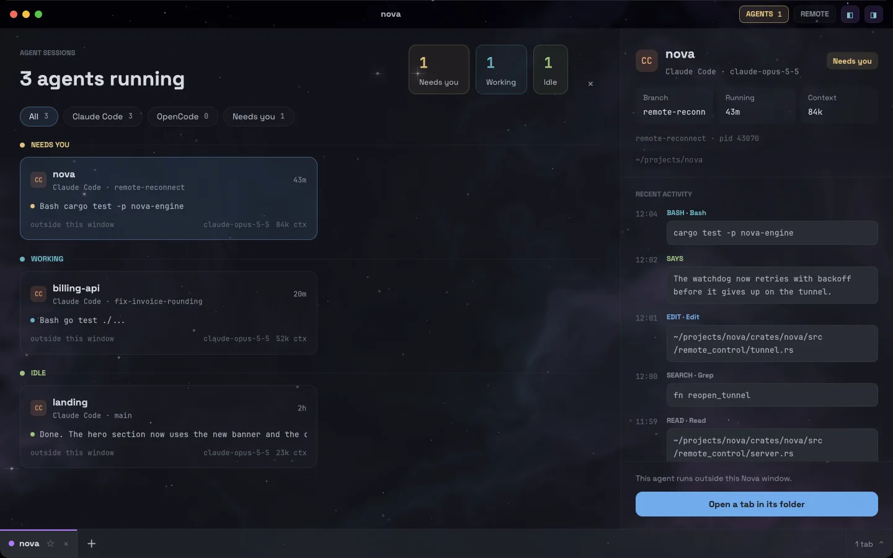
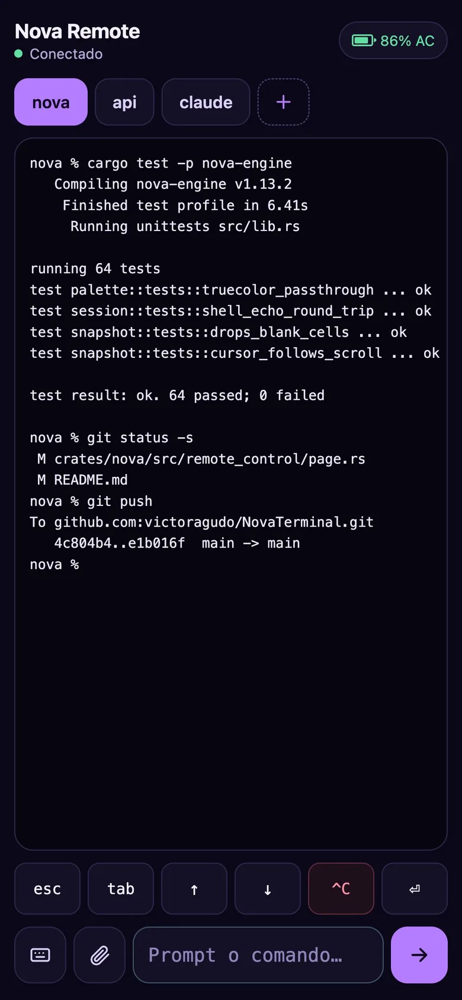
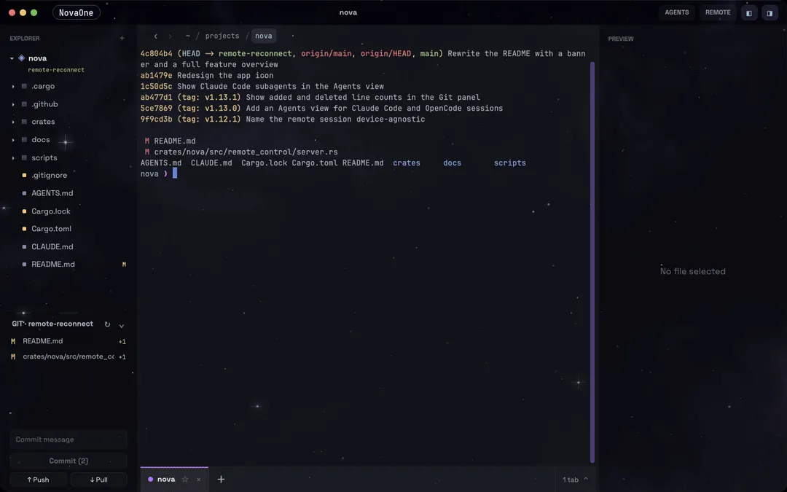

The native Mac terminal for your shell, files and AI agents.
Nova is a free macOS terminal written in pure Rust and drawn on the GPU through Metal. It keeps every Claude Code and OpenCode session in view, with split panes, files, previews and Git one keystroke away. No account, no AI credits, no Electron.
Apple Silicon · macOS 13 or newer · about 12 MB · updates itself

GPU rendered
GPUI on Metal, the UI framework behind Zed.
Pure Rust
alacritty_terminal at the core, no web stack.
10 themes
From Nova Dark to NovaOne Light.
Signed and notarized
Sparkle keeps it up to date.
Features
Everything around the shell, without leaving the window.
Files, previews, Git and split panes live next to the terminal, so a quick look never turns into a context switch.
-
A real terminal
Each tab runs its own login shell with your profile. Truecolor, scrollback, search, and links that work in TUIs even when they wrap.
-
Split panes
Split right or down, drag a tab onto the terminal to join it, name each pane, and even out the sizes with one shortcut.
-
File tree that follows you
The sidebar re-roots when you cd. Create, rename, copy, move and delete files, with back and forward history like a browser.
-
Instant previews
Syntax-highlighted code, images, SVG, PDF, zip listings and hex dumps, built off the main thread. One click opens Quick Look.
-
Git built in
Branch and status badges in the tree, plus a small panel with line counts, commit, pull and push.
-
Command palette
Cmd+K searches every command, open tab, Claude session, theme and artifact. Type
sessions:ortabs:to narrow it down.
Agents · Cmd+Shift+A
Every coding agent on your Mac, in one view.
Nova finds every Claude Code and OpenCode session running, subagents and profiles included. Nothing to set up.
- Needs you, Working, Idle. See at a glance which agent is waiting on an answer.
- Approve or interrupt. Permission prompts show up right in the panel.
- Session finder. Search, rename and resume any past Claude session with Cmd+Shift+O.


Remote
Your live tabs, from any browser.
Open your real Nova windows on a phone, a tablet or another computer. Watch output stream in and type back.
- Big keys on phones
Enter, Ctrl-C, Esc, Tab and arrows.
- Tabs and uploads
Switch, open or close tabs and send files.
- Tunnel or LAN
Cloudflare Tunnel by default, LAN or VPN if you prefer.
- Resume sessions
Open any Claude session straight from your phone.
Performance
Pretty, and still never in the way.
Paint never waits for the shell
Each frame copies the visible screen and releases the lock straight away.
Animation stays isolated
The nebula has its own small view; the rest of the UI is cached and redraws only on real changes.
Nebula on a Metal compute shader
Half resolution at about 30 fps, 60 only while a shooting star crosses.
Sleeps when you look away
All animation stops while the window is inactive.
Slow work off the main thread
Git status, previews and folder lookups run in the background.
About 12 MB
Thin LTO and stripped, with fonts and images inside.
Looks
Ten themes over a living nebula.
Nova Dark, Nova Light, Enana Blanca, Kilonova, Andromeda, Solar, Aurora, Púlsar, NovaOne and NovaOne Light. JetBrains Mono and Space Grotesk ship inside the app.

Tech stack
Native from the PTY to the pixel.
Two crates with a strict line between them: nova-engine owns the terminal and hands the UI owned data, nova is the app.
- Language
- Rust (stable)
- UI
- GPUI on Metal
- Terminal core
- alacritty_terminal
- Background
- Metal compute kernel
- Previews
- syntect, resvg, CoreGraphics
- Updates
- Sparkle
- Remote
- Built-in server, Cloudflare Tunnel
- Fonts
- JetBrains Mono, Space Grotesk
Keys worth learning first
- Command palette⌘ K
- Split right⌘ D
- Equalize panes⌘ ⌥ =
- Agents⌘ ⇧ A
- Claude sessions⌘ ⇧ O
- Next theme⌘ ⇧ L
Compare
Coming from another terminal?
See how Nova lines up against the terminal you use today, and what changes when you switch.
FAQ
Questions people ask before switching.
Is Nova Terminal free?
Yes. Nova is a free download for Apple Silicon Macs running macOS 13 or newer. There are no paid plans, no AI credits and no account to create. Download the DMG from GitHub, drag Nova to Applications and it keeps itself up to date with Sparkle.
Is Nova a good alternative to Warp?
Nova suits developers who want a modern, GPU-rendered Mac terminal without an account or a built-in AI plan. Instead of its own agent, Nova works with the agents you already run, like Claude Code and OpenCode, and adds a file tree, previews, Git and remote access.
What is the best terminal for Claude Code on Mac?
A good terminal for Claude Code renders fast output smoothly, supports Shift+Enter for new lines and makes it easy to juggle several sessions. Nova does all three and adds an Agents view that lists every Claude Code session, shows which one needs you and lets you approve prompts in place.
Does Nova work with my existing zsh or bash setup?
Yes. Every tab starts your shell as a login shell, so it loads the same profile as Terminal.app: your aliases, prompt, PATH and plugins carry over with nothing to migrate. You can pick a different shell in Settings.
Does Nova run on Linux, Windows or Intel Macs?
No. Nova is a native macOS app built on Metal and currently ships for Apple Silicon Macs running macOS 13 or newer.
Try Nova today.
Download the DMG, drag Nova to Applications, and it keeps itself up to date from then on.
Apple Silicon · macOS 13+ · signed and notarized